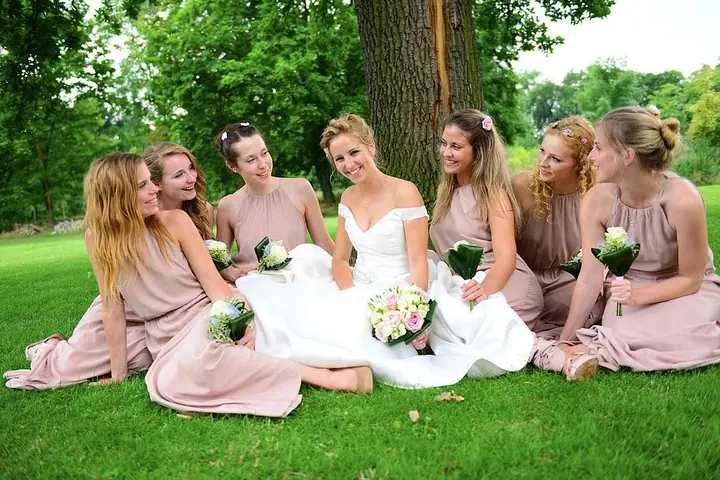
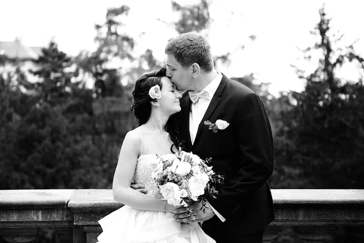
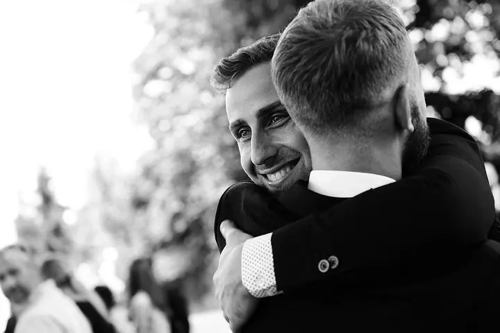
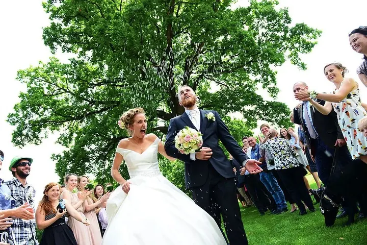

Svatební focení
Váš den nafotím takový, jaký opravdu bude, v reportážním stylu a bez strojeného pózování. Vybrat si můžete balíček na 6, 9 nebo 12 hodin.





Jmenuji se Nicola Zörkler a jsem svatební, párová a produktová fotografka z Prahy. Fotoaparát mám v ruce přes deset let a zaznamenávám na něj lidi, emoce, smích i pláč, ale i produktové fotky pro váš byznys.
Více o mně
„Moje největší přání je, abyste se u fotek stále dojímali i za mnoho let.“
— Nicola Zörkler
Váš den nafotím takový, jaký opravdu bude, v reportážním stylu a bez strojeného pózování. Vybrat si můžete balíček na 6, 9 nebo 12 hodin.
Focení doma, v lese, na louce nebo na místě, které pro vás něco znamená. Zachytávám hlavně momentky, vaši přirozenost a radost, aby děti mohly být dětmi.
Produktové fotky na e-shop, brandové fotky na web a sociální sítě i momentky z výroby nebo z vašeho eventu. Cenu stanovím podle toho, co budeme tvořit.
Portréty pro vaše podnikání, web a profesní profily. Světla můžu přivézt k vám, nebo zajistím ateliér.
Fotografie jsou ilustrační
Jsem mladá fotografka z Prahy a fotoaparát mám pevně v ruce už přes deset let. Nedokážu si představit, že bych dělala cokoliv jiného. Nejvíc mě baví fotit lidi, jejich emoce a vzpomínky, které z fotek budete cítit i za mnoho let.
Být krásný znamená být sám sebou, a proto stavím na přirozenosti. Je mi blízký reportážní styl. Nebudu vás do ničeho tlačit ani vás nutit do strojených póz. Ať jde o svatbu, procházku ve dvou nebo rodinnou oslavu, chci, abyste se uvolnili a na fotkách poznali sami sebe.
Kromě lidí fotím i pro firmy: produkty na e-shop, brandové fotky na web a sociální sítě nebo vaši konferenci. Jestli ještě nemáte přesnou představu, nebojte se mi napsat. Společně to vymyslíme.

Sejdeme se osobně nebo si zavoláme a projdeme si, jak si svůj den představujete. Dostanete ode mě svatební dotazník a když si plácneme, podepíšeme smlouvu.
Termín potvrdíte 50% zálohou. Zbytek doplatíte při předání hotových fotek.
Focení naplánujeme tak, aby sedělo do vašeho harmonogramu, nejčastěji během zlaté hodinky. Párové focení zabere většinou 30–60 minut a ani déšť není důvod ke stresu.
Do 3 dnů dostanete první upravené fotky, kompletní galerii pak v online galerii a na dřevěném USB disku. Tisk fotek je součástí balíčku.
Mám tři balíčky: Starter Kit na 6 hodin za 18 000 Kč, Ideal na 9 hodin za 26 000 Kč a All-in na 12 hodin za 33 000 Kč. Ve všech je online galerie, slideshow video, USB disk a vytištěné fotky.
Prvních 10–30 upravených fotek (podle balíčku) vám pošlu do 3 dnů po svatbě. Kompletní galerii dodám do 4 týdnů, u menších svateb i dřív.
Žádný stres, i s deštníkem se dá vykouzlit krásná atmosféra. Kdyby počasí opravdu nespolupracovalo, můžeme se domluvit na posvatebním focení.
Hodinové focení se 40–60 upravenými fotkami stojí 3 000 Kč, dvouhodinové 4 500 Kč. Těhotenské a následné rodinné focení s miminkem nabízím společně za 6 000 Kč.
Každé komerční focení je jiné, proto nemám jednotný ceník. Cenu vám připravím podle toho, co budeme tvořit, ať už přivezu světla k vám, nebo objednám ateliér.